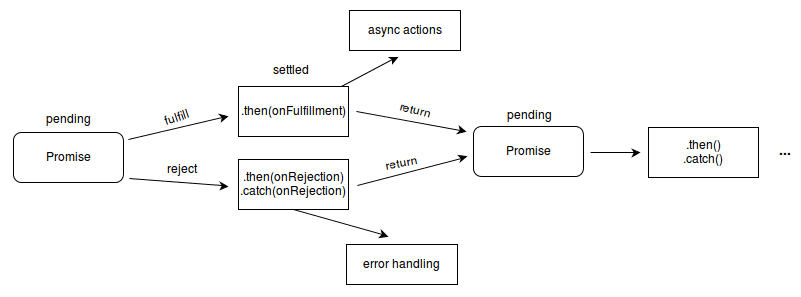

ES 6 / ES 2015 常用知识点归纳
半年前学习的 ES6 新特性好久没有又生疏了，今天总结一下其中常用的一些特性。这些新特性可能是一些简单的语法糖，可能是一种新的编程理念或者思想。不论如何，ES6 带来的 JavaScript 语言的改变确实可以极大的提高我们的开发效率。同时也是 JS 开始走向多模式编程（函数式、OOP）的第一步。
1. 迭代器和 for-of 循环：
遍历数组的 4 种方法：for 循环、for-in 循环（遍历键名）、ES5 的 forEach 方法（不能 break 和 continue）、ES6 的 for-of 循环（遍历键值），其中不建议使用 for-in 来遍历数组，因为 for-in 也会同时遍历数组原型链上的可枚举属性，而且遍历顺序不确定。
数组、字符串类型会自动创建内部迭代器 [Symbol.iterator]，因此可以直接使用 for-of 进行迭代。甚至一些类数组类型也可以使用 for-of 进行遍历，比如 arguments 对象和 NodeList 对象。对于普通对象，可以使用 Object.keys 获得该对象的键名，然后再使用 for-of 进行遍历。也可以自行实现对应的迭代器方法使其可迭代；[Symbol.iterator] 方法会返回一个含有 next 方法的对象，for-of 每一次迭代时会调用该方法，返回一个含有 value 和 done 两个属性的对象，当 done 的值为 true 时迭代结束。
function iteratableMethod() {
this.value = 0;
}
iteratableMethod.prototype[Symbol.iterator] = function() {
var self = this;
return {
next: function() {
var isDone = false;
if (self.value++ > 5)
isDone = true;
else
isDone = false;
return {
done: isDone,
value: self.value
}
}
}
2. let 和 const：
使用 const 定义的常量不能在程序的其他地方进行修改。使用 let 定义的变量拥有块级作用域，比如在 if 语句内部的 let 变量只在该 if 语句内有效，并且不会对外层的同名变量产生影响；let 声明的全局变量并不属于 window 属性；在 for-in、for-of 和普通的 for 循环中使用 let 关键字定义的变量会使该 for 循环成为一个 for 级块作用域，每次循环都会产生一个级块作用域。并且在该作用域中还保存了当前的词法环境。使用 let 可以解决循环事件绑定的问题，示例代码如下所示。
var attrs = [1, 2, 3];
for(let i = 0; i < attrs.length; i++) {
setTimeout(function() {
console.log(attrs[i]);
}, 2000 + 500 * i);
}
3. 不定参数和默认参数：
不定参数也很好理解，我们可以使用不定参数来代替 arguments 类数组对象来存储函数调用时传递过来的多余的参数；不定参数不会为 undefined，但可能为空数组；并且不定参数只能放在函数的最后一个参数的位置上；如果你写过 PHP 程序，应该会对函数的默认参数很熟悉，这里有几点需要注意，传入 undefined 作为参数同没有传参的效果是一样的。
function method(name = "apple", price = 10, ...others) {
console.log(name);
console.log(price);
console.log(others);
}
4. 模板字符串：
模板字符串为 JavaScript 提供了简单的字符串插值功能，同时我们还可以对模板字符串进行标签模板的功能。
let person = {
name: "Alice",
age: 18
};
let hometown = "USA";
// 标签模板；
let message = `I am ${person.name}, I'm from ${hometown}`;
console.log(message);
5. 箭头函数：
箭头函数没有自己的 this 指针，所以只能使用从父作用域继承过来的 this 指针；并且在箭头函数中无法使用 arguments 对象，只能使用不定参数来代替 arguments 对象；
function method() {
return (a, b) => a + b;
}
function method() {
return (a, b) => {
return a + b;
}
}
function method() {
// 返回字面量对象时，要用小括号将对象包装起来；
return (a, b) => ({a, b});
}
6. Symbols：
Symbols 是 JS 的第七种原始类型，一般用于创建防止属性名冲突的属性，也就是说可以将 Symbols 作为对象的属性名，那么该属性名则不会与任一个属性名发生冲突。
var obj = {};
var mySymbol = Symbol("mySymbol");
obj[mySymbol] = 1;
Symbol.for("mySymbol") === Symbol.for("mySymbol") // true；
7. 解构：
解构赋值允许你使用类似数组或对象字面量的语法将数组和对象的属性赋给各种变量。当使用数组赋值模式时，被解构的值一定要包含一个迭代器。
let array = [1, 2, 3];
let [a, b, c] = array;
let {name: nameA} = {name: "Jason"};
let {missing} = {};
// 若没有变量声明符，则需要在整个表达式外部加小括号；
({blowUp} = {blowUp: 10});
// 设置默认值；
let [missing = true] = [];
let { message: msg = "Something went wrong" } = {};
// 导入 CommonJS 模块；
const { SourceMapConsumer, SourceNode } = require("source-map");
8. 生成器 Generator：
本质上，生成器就是一种迭代器，其内部会自动生成 [Symbol.iterator] 函数，因此可以对一个迭代器对象使用 for-of 循环进行遍历；由于普通函数没有内置的迭代器，因此不能通过 for-of 进行遍历。而生成器正好可以解决这个问题。生成器函数体每次执行一部分，每当执行到一个 yield 表达式的时候就会暂停。（课题：通过结合生成器和 Promise 的概念可以解决“回调地狱”的问题）
function* range(start, stop) {
for (var i = start; i < stop; i++)
yield i;
}
for(let item of range(1, 10)) {
console.log(item);
}
// 使任意对象可迭代；
function fai() {
this.i = [1, 2, 3, 4, 5];
}
fai.prototype.ite = function*() {
for(let item of this.i) {
yield item;
}
}
fai.prototype[Symbol.iterator] = function() {
return this.ite();
}
9. 类和子类：
ES6 中提供了类和子类的实现方法。
class Shape {
constructor(color) {
this._color = color;
};
}
class Circle extends Shape {
// 构造函数；
constructor(radius) {
this.radius = radius;
Circle.circlesMade++;
};
// 静态方法；
static draw(circle, canvas) {
// Canvas 绘制代码；
};
static get circlesMade() {
return !this._count ? 0 : this._count;
};
static set circlesMade(val) {
this._count = val;
};
// 实例方法；
area() {
return Math.pow(this.radius, 2) * Math.PI;
};
get radius() {
return this._radius;
};
set radius(radius) {
if (!Number.isInteger(radius))
throw new Error("圆的半径必须为整数。");
this._radius = radius;
};
};
10. Promise：
Promise 主要用于解决“回调地狱”的问题，由于对于一个事务的各种情况都要在回调函数中进行处理，导致最终回调的方法一环套一环，失去了代码原有的可读性，并且这种回调的方式也不符合人们正常的逻辑思维方式。Promise/A+ 规范中规定 Promise 对象是一个有限状态机，它有三个状态，分别是从：pending -> fulfilled 或 pending -> reject。Promise 的第一个事件节点的状态会沿着 Promise 链一直向下传递，如果其中某一个节点返回了 reject 状态的 Promise 对象或者抛出异常，则整个 Promise 的生命周期结束。我们可以通过在 Promise 链的最后加入 catch 方法来捕捉整个生命周期中发生的错误。Promise.all（Promise 全部 resolve 则响应） 和 Promise.race（响应最先 resolve 的 Promise）方法用来处理多并发事务的情况。

var promise = new Promise((resolve, reject) => {
setTimeout(function() {
return resolve({data: "success1"});
}, 2000);
});
promise.then(data => {
console.log("success from promise 1: ", data);
return new Promise((resolve, reject) => {
setTimeout(function() {
return resolve({data: "success2"});
}, 2000);
});
}).then(data => {
console.log("success from promise 2: ", data);
return new Promise((resolve, reject) => {
setTimeout(function() {
return reject({data: "fail3"});
}, 2000);
});
}).then(data => {
console.log("success from promise 3: ", data);
}).catch(err => {
console.log("fail from promise 3: ", err);
});
11. 模块 Modules：
ES6 中的模块默认都是在严格模式下执的。
export function detectCats(canvas, options) {
var kittydar = new Kittydar(options);
return kittydar.detectCats(canvas);
}
export class Kittydar {
// ...
}
// 该函数没有被导出；
function resizeCanvas() {}
import {detectCats, Kittydar} from "kittydar.js";
function go() {
var canvas = document.getElementById("catpix");
var cats = detectCats(canvas);
drawRectangles(canvas, cats);
}